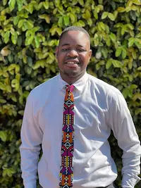

Daniel Dos Santos | WDD 130
Hello my name is Daniel Dos Santos I am 28 years old and I live in South Africa. I enjoy sports a lot especially footbal/soccer. I love spending time with my family and firends I hold a GA Level 5 TEFL Diploma, which I've put to good use teaching at Prince and Princess Private School, where I love sparking curiosity and growth in my students. Being fluent in both English and Portuguese gives me a unique edge to connect with people from diverse backgrounds, whether in the classroom or beyond Right now, I'm diving headfirst into the tech world, studying software development through BYU Pathway, But that’s not all—I’m a creative soul, too! I design and craft handmade African-inspired afro-ties, pouring my cultural heritage into every piece to celebrate and share the vibrant spirit of Africa. I learneed to make ties on my mission in Mozambique and has been my small business ever since I came back from my mission in 20222. I’m all about living with purpose and spreading positivity. My goal? To leave a lasting impact by weaving together education, technology, culture, and spirituality in everything I do!